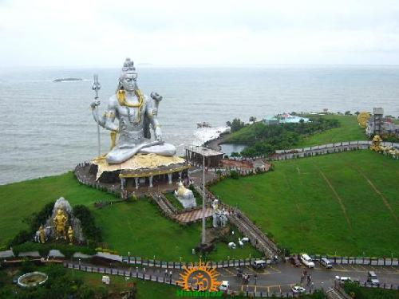

Murudeshwara is a town in Bhatkal Taluk of Uttara Kannada district in the state of Karnataka, India. The town is located 13 km from the taluk headquarters of Bhatkal. Murudeshwara is famous for the world's second tallest Shiva statue, the town lies on the coast of the Arabian Sea and is also famous for the Murudeshwara Temple.[1] Murudeshwara has a railway station on the Mangaluru-Mumbai Konkan railway route.
The origin of the name "Murdeshwar" dates to the time of Ramayana. The Hindu gods attained immortality and invincibility by worshiping a divine Linga called the Atma-Linga. The Lanka King Ravana wanted to attain immortality by obtaining the Atma-Linga (Soul of Shiva). Since the Atma-Linga belonged to Shiva, Ravana worshipped Shiva with devotion. Pleased by his prayers, Shiva appeared before him and asked him what he wanted. Ravana asked for the Atma-Linga. Shiva agreed to give him the boon on the condition that it should never be placed on the ground before he reaches Lanka. If the Atma-Linga was ever placed on the ground, it would be impossible to move it. Having obtained his boon, Ravana started back on his journey to Lanka.
Lord Vishnu, who came to know of this incident, realised that with the Atma-Linga, Ravana may obtain immortality and wreak havoc on earth. He approached Ganesha and requested him to prevent the Atma-Linga from reaching Lanka. Ganesha knew that Ravana was a very devoted person who performed prayer rituals every evening without fail. He decided to make use of this fact and came up with a plan to confiscate the Atma-Linga from Ravana.
As Ravana was nearing Gokarna, Vishnu blotted out the sun to give the appearance of dusk. Ravana now had to perform his evening rituals but was worried because with the Atma-Linga in his hands, he would not be able to do his rituals. At this time, Ganesha in the disguise of a Brahmin boy accosted him. Ravana requested him to hold the Atma-Linga until he performed his rituals, and asked him not to place it on the ground. Ganesha struck a deal with him saying that he would call Ravana thrice, and if Ravana did not return within that time, he would place the Atma-Linga on the ground.

Ravana returned to find that Ganesha had already placed the Atma-Linga on the ground. Vishnu then removed his illusion and it was daylight again. Ravana, realising that he had been tricked, tried to uproot and destroy the linga. Due to the force exerted by Ravana, some pieces were scattered. One such piece from the head of the linga is said to have fallen in present-day Surathkal. The famous Sadashiva temple is said to be built around that piece of linga. Then he decided to destroy the covering of the Atma-Linga, and threw the case covering it to a place called Sajjeshwar, 37 kilometers away. Then he threw the lid of the case to a place called Guneshwar (now Gunavanthe) and Dhareshwar, 16-19 kilometers away. Finally, he threw the cloth covering the Atma-Linga to a place called Mrideshwar in Kanduka-Giri (Kanduka Hill). Mrideshwar has been renamed to Murdeshwar.
Take a look of TEMPLE here: